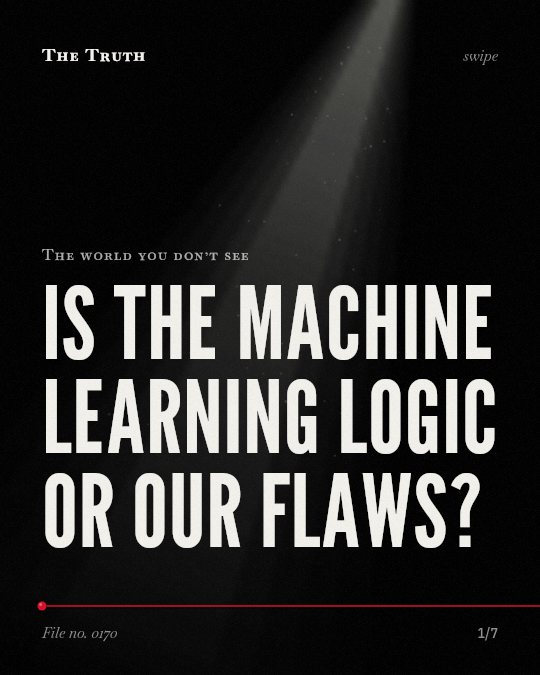

Subject
The human brain
 Does your gaming habit make you cold?
Does your gaming habit make you cold? Is your memory a recording or a reconstruction?
Is your memory a recording or a reconstruction? Is your loneliness causing a physical reaction in your brain?
Is your loneliness causing a physical reaction in your brain?
Is the machine learning logic or our flaws? Does your routine leave a physical mark on your brain?
Does your routine leave a physical mark on your brain? Is your deep focus actually a malfunction?
Is your deep focus actually a malfunction? Do you choose your next move?
Do you choose your next move? Are you really only using half of your brain?
Are you really only using half of your brain? Does social rejection feel like a physical wound?
Does social rejection feel like a physical wound? What did you miss in the last hour?
What did you miss in the last hour? Does stress always change your brain?
Does stress always change your brain? Does your brain stay clean while you sleep?
Does your brain stay clean while you sleep? Do you choose your actions or just witness them?
Do you choose your actions or just witness them? Does your screen actually help you remember?
Does your screen actually help you remember? Can a game actually make you smarter?
Can a game actually make you smarter? Is dopamine about pleasure?
Is dopamine about pleasure? Is the air in your neighborhood aging your brain?
Is the air in your neighborhood aging your brain? Does your lack of sleep change your personality?
Does your lack of sleep change your personality? Is your school schedule hurting your sleep?
Is your school schedule hurting your sleep?